Guided Navigation is a supplementary navigation that allows shoppers to filter (or reduce) a product set based on attributes the shopper is looking for. It is more flexible than standard hierarchical navigation because it allows the user to define different combinations of search attributes rather than traversing a category hierarchy. Guided Navigation always begins by showing a product set to the user. This product set can be defined by a top level category selection or a search the user performs.
Guided Navigation only makes sense in the context of product listing pages and should not be shown on pages other than product listing pages.
Reductive Elements
Guided Navigation is comprised of two basic structures to create a filter: Reductive Groups and Reductive Attributes. The image below contains an example of a reductive group ("Color") with multiple reductive attributes ("Blue", "Green", and "Red"). As a shopper browses they will be able to choose one reductive attribute per group.
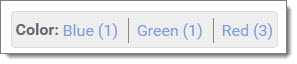
Building Guided Navigation
When a Guided Navigation page is loaded, the navigation is built based upon the product set currently being viewed. This is a key concept when planning or modifying your Guided Navigation. Every Reductive Group with Reductive Attributes that contain matching products to the category selection or search entry will be shown. In other words, in the example above, if there were no "Red" products in our current product set, the "Red" Reductive Attribute would not be shown. If there were no products in any of the "Color" attributes, the "Color" Reductive Group would not be shown. This calculation is made every time a user selects another reductive attribute, so the navigation will narrow itself with each selection the user makes.
NOTE: There is a Setting called GuidedNavigation.ShowEmpties that can be enabled which would display ALL departments, overriding the behavior mentioned above. This setting is only valuable in limited circumstances so care should be taken when building your Guided Navigation and Department structure.
If you would like some Reductive Groups to only show on certain categories, you need to carefully map the products in each category such that each unwanted Reductive Group is empty for that category (a Reductive Group is considered empty when all of its Reductive Attributes are empty).
Installation Guide
Before You Begin
In order to safely complete this installation on a live website you need to be able to backup your site files and database, and have a plan and permission to restore them should you encounter a problem during the installation process.
Different hosting providers and environments will have different methods of backing up and restoring databases. Please work with your hosting company to discuss the backup and restore tools that are available to you.
This installation process requires a moderate level of technical expertise.
Please read through the entire installation guide and make sure you understand the installation process before you begin an installation on your live site. If there are any steps of this installation process that are unclear, please submit a ticket to http://support.aspdotnetstorefront.com to request assistance.
Before you begin please ensure that:
- You have file access to the root of your website (FTP or RDC are the most common).
- You have Super Admin access to your AspDotNetStorefront admin site.
Installation
Backup your database.
Backup your site files.
Copy the contents from the installation folder into your website.
Copy the Web/Skins/Default/Css/GuidedNavigation.css file to the wwwroot/Skins/{YourSkinFolder}/Css folder on your website.
Copy the Web/Skins/Default/Scripts/guidednavigation.js file to the wwwroot/Skins/{YourSkinFolder}/Scripts folder on your website.
Copy the contents of Web/Skins/Default/XmlPackages folder to the wwwroot/Skins/{YourSkinFolder}/XmlPackages folder on your website.
NOTE: If you are prompted to overwrite page.search.xml.config, please do.
In your site, open the file wwwroot/Skins/{YourSkinFolder}/Views/Shared/_Head.cshtml in an editor. Link to the guided navigation css file by adding: Url.AppRelativeSkinUrl("css/guidednavigation.css"), to the css/bundled group.
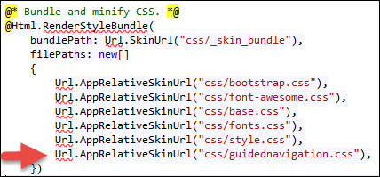
NOTE: You may have to add the guidednavigation.js reference to your site jQuery minify entries in the wwwroot/Skins/{YourSkinFolder}/Views/Shared/_Head.cshtml file. Link to the guidednavigation.js file by adding: Url.AppRelativeSkinUrl("scripts/guidednavigation.js"), to the Bundle and minify jQuery group.
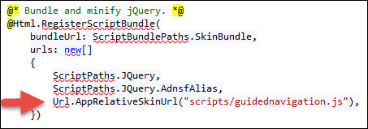
Navigate to the installer page by going to http://www.yourdomain.com/e-guidednavigationinstall.aspx in your browser if your GlobalConfig value of UrlMode is "Legacy Only".
Navigate to the installer page by going to http://www.yourdomain.com/xmlpackage/guidednavigationinstall in your browser if your GlobalConfig value of UrlMode is "Modern Only".
NOTE that either URL type above will work when the UrlMode is "Modern with Legacy 301 Redirects"
Click the Begin Installation button.
Login to the admin console of your website and click the Refresh Store button to finish the installation.
Remove the guidednavigationinstall.xml.config xmlpackage from your XmlPackages folder. It is no longer needed.
Refer to the User Guide below for information on setting up your guided navigation attributes.
Default instances of Guided Navigation use Categories, Manufacturers, and Price Ranges as top level product groupings. These should be the most basic product groupings on your site. They are the starting point for a user's shopping experience.
Guided Navigation is further defined by Departments (these are called "sections" inside the code and database). Each top level Department defines a Reductive Group and each second level Department defines a Reductive Attribute. In the examples above, the department hierarchy shows a Reductive Group ("Color") and the Reductive Attributes under "Color" ("Blue", "Green", "Red"). These are the filters displayed by default.
Setting up your categories to use guided navigation
To use Guided Navigation on a category page, you'll need to choose the Guided Navigation Grid layout from the Page Layout drop down and Save your category:
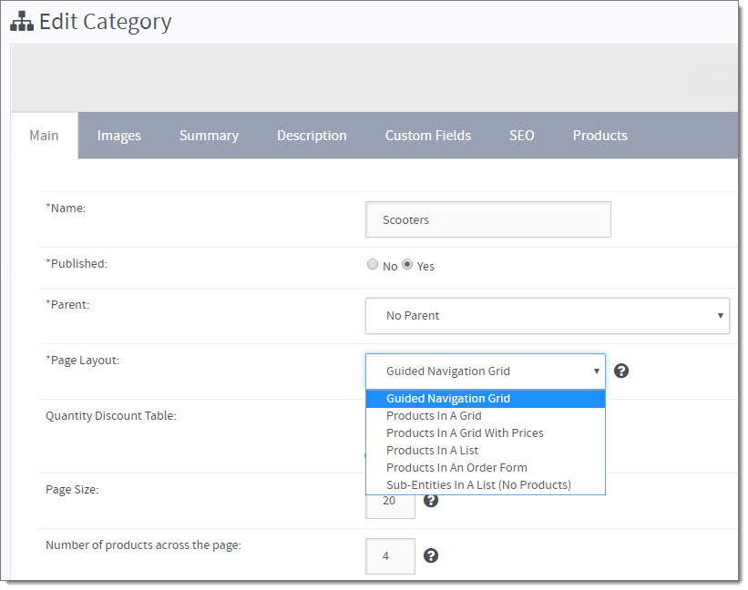
If you want to use guided navigation on ALL of your category pages you can run the following SQL query in your admin console under Configuration > Advanced > Run SQL:
If you were to look at the category page now it would look something like this:
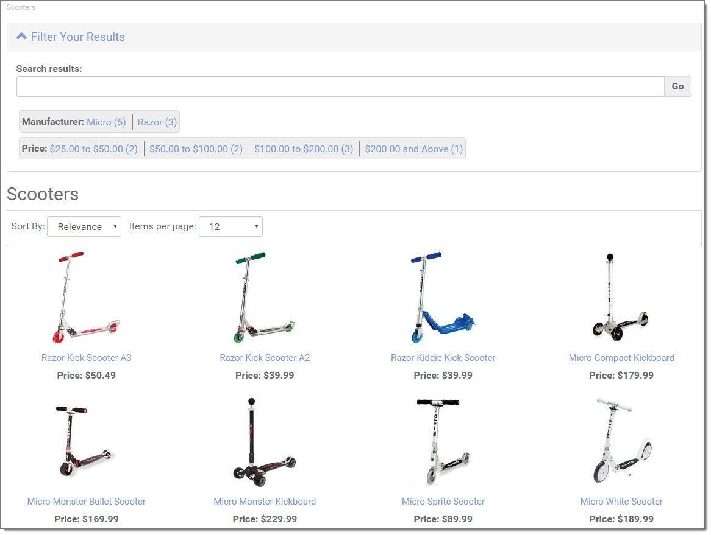
Setting up your Price Range filter
To set up the price ranges you want, simply use the Setting: GuidedNavigation.PriceRanges using a comma-delimited list of numeric values. The Guided Navigation ships out of the box with a typical set of price ranges. This filter is dynamically populated so there is no need to map any products to it.
The Price Range filter is enabled by default. It can be disabled using the Setting : GuidedNavigation.ShowPriceRanges
Setting up your Manufacturer filter
The Guided Navigation ships out of the box with the Manufacturer filter enabled by default. To disable it, simply use the Setting: GuidedNavigation.ShowManufacturers . This filter is dynamically populated from your Product - Manufacturer mappings so there is no need to map any products to it.
Setting up your Reductive Groups and Reductive Attributes
To set up your reductive groups and attributes you'll need to log in to the admin console and create a new department. We'll use "Color" for this example.
o to Products > Product Groups . Next select the Departments button, then click the Create Department Button:
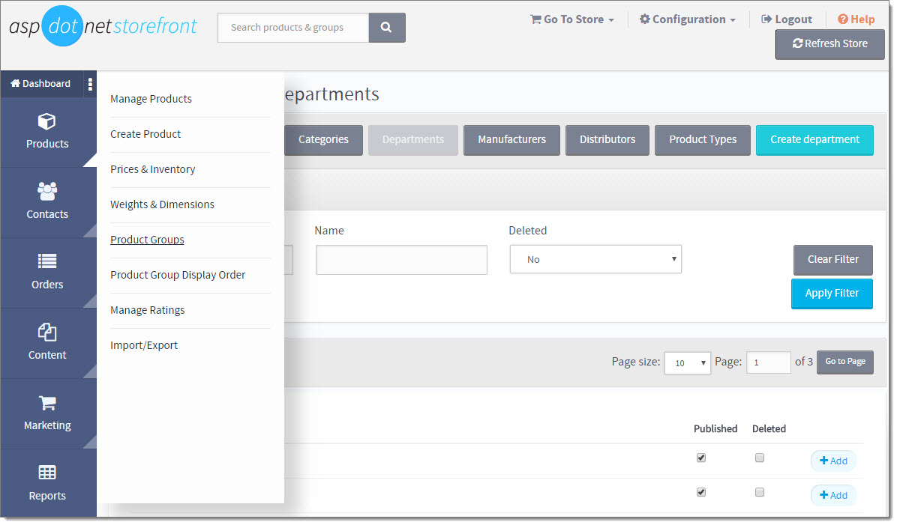
Name the department with the name of your Reductive Group, "Color" for example, and then click Save and Close.
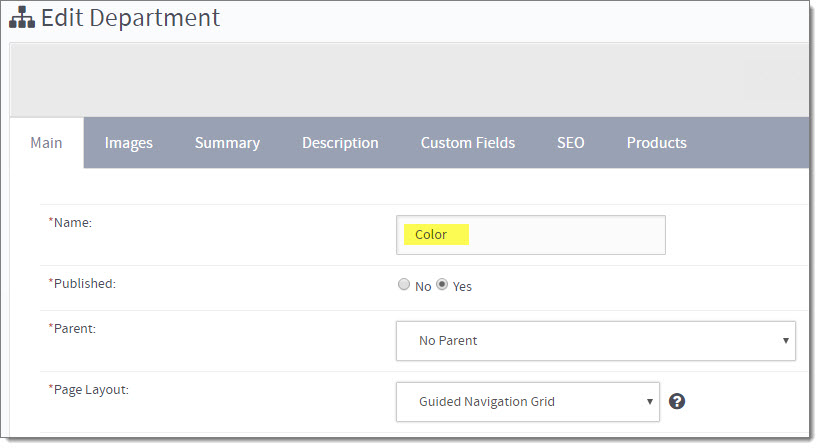
Now we'll add a reductive attribute to our reductive group by clicking the +Add button next to the newly created reductive group.
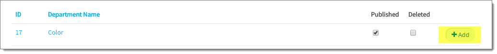
Name your new reductive attribute "Red", for example and click Save and Close.
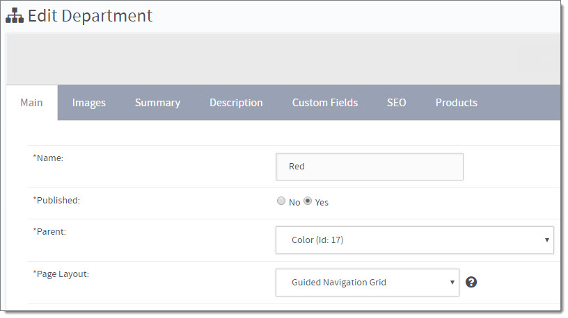
Repeat this process until you've got all the attributes you want for the group.
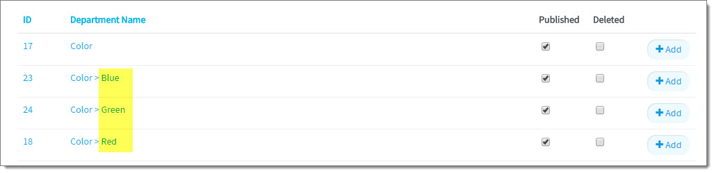
Now that we've got a Reductive Group and Reductive Attributes, we need to map some products to these Reductive Attributes. Edit an attribute (such as "Red" in our example) and assign relevant products to it using the Products tab, then clicking the Products for Department link. Be sure to check the "Show Unmapped Products" checkbox, enter any other filter values you want, and click Apply Filter. Check all products that apply (those mapped to categories that are using Guided Nav and relate to this attribute) and click Save. BE SURE to click Save on each grid page, as it only saves the currently viewed products.
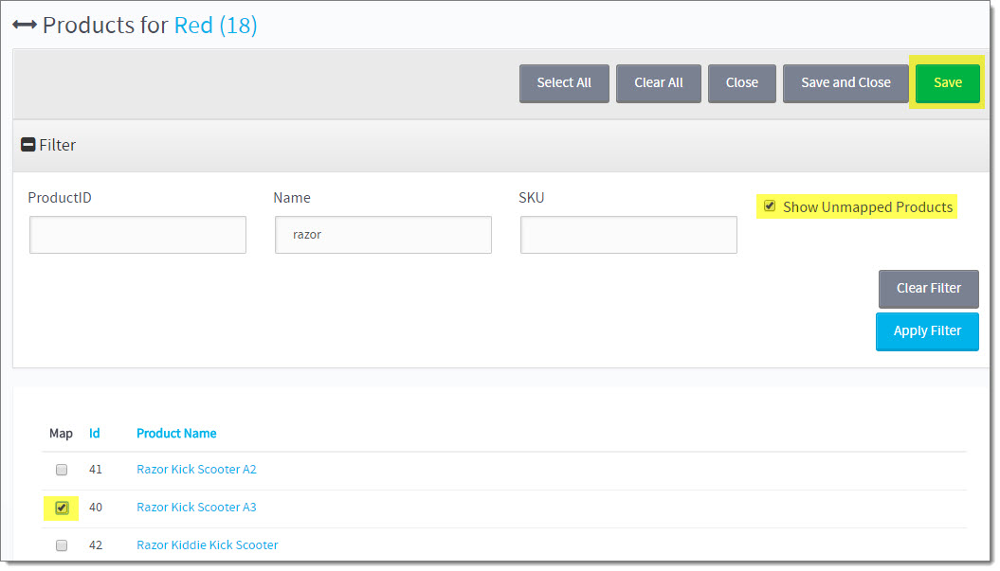
Repeat this process until you've got all pertinent products mapped up to the reductive attributes.
NOTE: You do NOT need to map products to the Reductive Group departments, only to the Reductive Attributes.
Now your category page should look something like this:
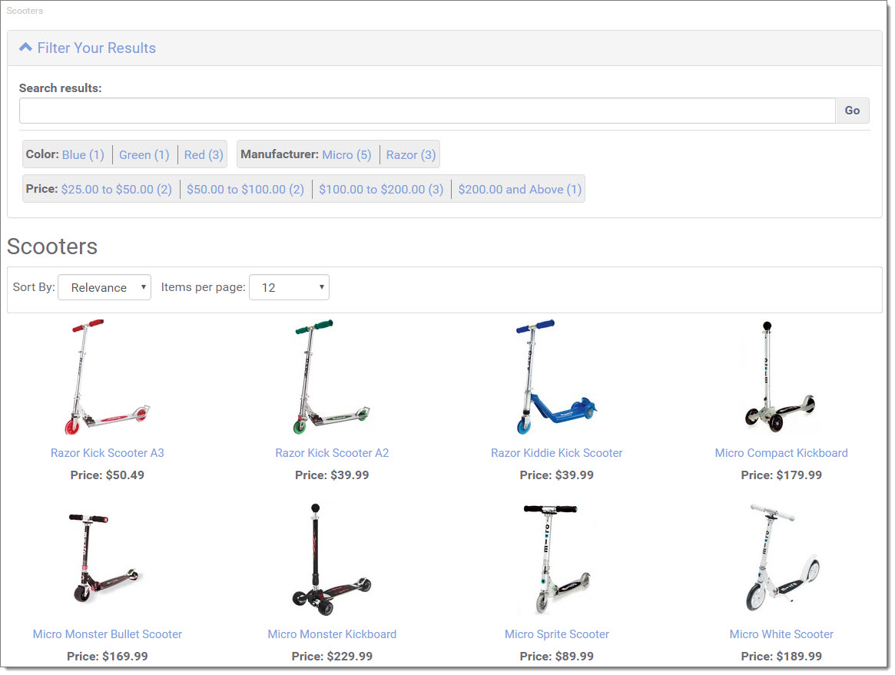
Layout Options
Guided Navigation has a few different layout options, which you can change at any time.
One Column
This layout works well when your site already has a vertical navigation down one side on every page of the site. To turn this option on, change the Setting: GuidedNavigation.LayoutStyle to onecolumn. One drawback to this option however is that it can push a lot of your products down on the page.
This option can be seen in the examples above.
Two Column
The default option is a two column layout. This is an excellent option if your site is full width. In other words, your site does not have a vertical navigation on every page of the site already. To turn this option on, change the Setting: GuidedNavigation.LayoutStyle to twocolumn.
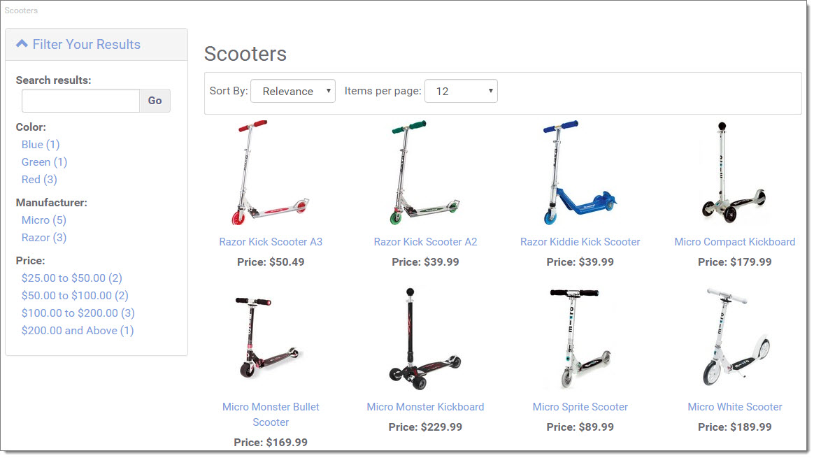
Replace a column
If the one column and two column layouts do not work for you because you've got a two column template and you want to have a vertical navigation on all pages of your site, but you would like to replace the vertical navigation on other pages of the site then this is probably your best option. You can replace a given element in your template with the contents of the guided navigation by providing a CSS selector in the Setting: GuidedNavigation.NavigationElementSelector. An example selector could be #verticalNavWrapper. This would replace your vertical navigation with guided navigation. Try it out! If it doesn't look right just change the Setting back to blank. If the guided navigation doesn't show up, check to make sure your CSS ID is spelled correctly and includes the pound sign (#).
Use Hierarchy
Using hierarchy in your Guided Navigation can expand the filtering capabilities allowing for more detailed navigation results. With the settingGuidedNavigation.UseHierarchy set to Yes (True), you can add deeper levels of Reductive Groups and Attributes.
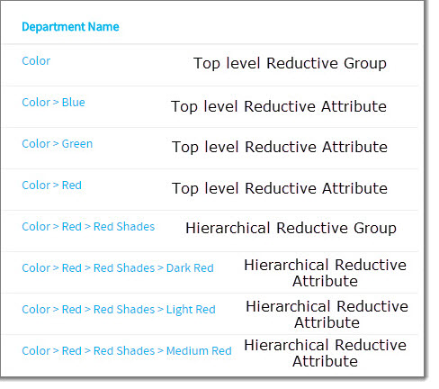
In this example, we have added another level of Reductive Groups and Attributes to the Reductive Attribute "Red", called "Red Shades". The "Red Shades" Group and its Attributes ("Dark Red", "Medium Red" and "Light Red") will only be displayed when the higher level Attribute "Red" has been selected. The "Red Shades" Attributes will display if they contain products also mapped to the "Red" Attribute. Again, the Group "Red Shades" is a Reductive Group and does not need any products mapped to it. Only the Reductive Attributes require products to be mapped, and those must be mapped up through the parent Attributes (in this example, "Red").
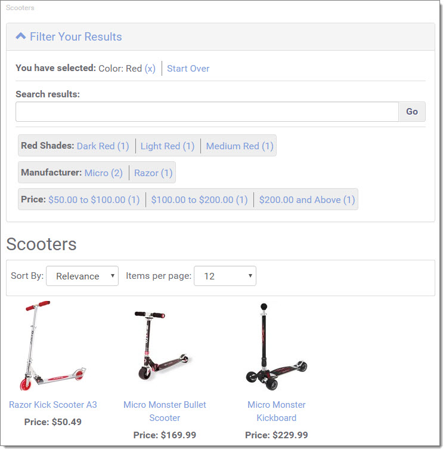
Configuration Options
To access all of the different configuration options for Guided Navigation search the store Configuration - Settings for "GuidedNavigation" (or select it from the drop down in "Setting Group").
GuidedNavigation.IsInstalled
This config is an indicator that the Guided Navigation was successfully installed. The only time this needs changed to No (False) is if you need to re-install the add-on.
GuidedNavigation.LayoutStyle
This allows you to change the layout of the guided navigation page from a one column layout to a two column layout. The default value is twocolumn. The other option is onecolumn.
GuidedNavigation.LinkCount
The number of Reductive Attribute links to show before a "more..." button is provided for additional Attributes.
GuidedNavigation.NavigationElementSelector
(Advanced - see above for specific details) This option allows you to replace a section of your website with the guided navigation options ("Replace a Column"). To do this you need to find a unique CSS selector that identifies a section of your template. This is designed to be used to override a default navigation area.
GuidedNavigation.PriceRanges
This config is used to establish the price ranges in the dynamic filter, as a comma separated list of ranges (default: 0-25,25-50,50-100,100-200,200-1000000 ). This is only used if GuidedNavigation.ShowPriceRanges is enabled.
GuidedNavigation.ShowCategories
If Yes (True), then top-level Category products matching the search term will be available for filtering. This is only pertaining to Search results.
GuidedNavigation.ShowCounts
When set to Yes (True) the number of products in each Reductive Attribute will be shown next to each Attribute.
GuidedNavigation.ShowEmpties
Show empty categories (unlinked). This drastically changes the behavior of the navigation. All Reductive Groups and Attributes will be shown on every page, regardless of their count. When an attribute is chosen in a group, the whole group will still show, with the selected attribute bolded, and the rest disabled.
NOTE: Use this setting carefully, as it is only valuable in certain site types.
GuidedNavigation.ShowManufacturers
If Yes (True), then Manufacturers matching the search term will be available for filtering, and also will be displayed as a filter on Category pages.
GuidedNavigation.ShowPriceRanges
If Yes (True), then Price Range filters will be displayed on search and category pages (those using Guided Navigation), using the values defined in the setting: GuidedNavigation.PriceRanges
GuidedNavigation.ShowSelected
If Yes (True), the "You have selected" section will show above the Guided Navigation.
GuidedNavigation.UseDropdowns
If this is set to Yes (True), ALL Reductive Groups will be shown as dropdown menus rather than link lists.
If set to No (False), then you can specifically set a Reductive Group department to use the dropdown by entering "dropdown" in its Custom Fields > Custom Field 1 value. See the Product Groups page for more information on Custom Fields.
GuidedNavigation.UseFullTextSearch
Full Text Search for Guided Navigation must be enabled here. The site's Full Text Search must first be enabled in Configuration - Advanced - Setup Full-Text Search.
It is HIGHLY recommended to use Full Text Search with Guided Navigation.
GuidedNavigation.UseHierarchy
(Advanced - see above for specific details) Enables Reductive Hierarchy. Reductive Groups and Attributes below the first level will only be displayed when the parent Reductive Attribute is selected. If this is set to No (False), only the first level (top level Reductive Groups and Attributes) will display on the site.
Appendix
Running SQL in the admin console
Warning! You should always back up your database before running sql statements. You can easily break your website with a typo in your sql command.
Log in to the admin console of your website.
Navigate to Configuration > Advanced > Run SQL.
Copy the sql you want run and paste it into the textbox on the Run SQL admin screen. Click Submit.
Click the Refresh Store button in the admin console.


 Email This Article
Email This Article Previous Article
Previous Article Next Article
Next Article